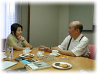
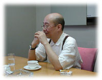
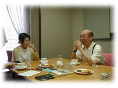

|  | 田口ランディ×鷲田清一 対談 |
| 臓器移植、摂食障害、援助交際、ピアッシング、セックスレス……などなど、現代人が抱える身体領域のさまざまな「危機的状況」が、いま思想的・哲学的な課題となっている。〈臨床哲学〉を提唱する哲学者 鷲田清一氏、初の長編小説『コンセント』で大反響をまきおこした作家 田口ランディ氏。それぞれ依って立つ地点は違えども、二人の視線は身体性の捉えなおしという点で交差する。歪みきった身体感覚をどう回復するかをめぐるこの対談、そのカギを握るのはＳＭ……。 |
| ■思い通りにならない身体から 田口 鷲田さんの『悲鳴をあげる身体』や『「聴く」ことの力』を読んで、なんて面白い方なんだろうと思いました。私は身体性について興味があって、ずっと考えてきたんです。でもどう考えていいのか、その方向は感覚的にしかわからなかった。それを鷲田さんは言葉に置き換えてくれました。その置き換えられた言葉に触発されてまた考える。それが楽しいんです。鷲田さんは身体性に興味をもたれたのはどのあたりからなんですか。 鷲田 うーん、やっぱりみっともないんですね。 田口 みっともない？ 鷲田 若いころって背伸びするでしょう。背丈と合わない本を読んでみたり、実力を省みずとてもかなわない音楽に挑戦してみたり。いい恰好しようと思っているのに、鏡に映る自分の身体は悲しいぐらいみっともない。その落差はずっと子どものころから埋まったことがない。ぼくにとって身体っていうものは、いやでも引きずっているものというイメージがあります。 田口 ふーん、なるほど。 鷲田 自分の身体だけではない。ピンナップ写真なんかを見るでしょう。スタイルのよい女の人が水着や裸になっている。それで、自分が好きになった女性の身体を見ると、これまたやっぱり思い通りにはいかない。 田口 あははは。 鷲田 「オレの生き方とちぐはぐになっている」という感じが強い。ところでぼくは、田口さんのことを『もう消費すら快楽じゃない彼女へ』のカバーに出ている女性だと思い込んでいたんですよ。 田口 パンツ脱いで、コピー機でお尻を撮ってる女性ですね。 鷲田 読みながら写真と見比べてたら、どうも見た目と文章の落差が気になって。そうしたら別人だった（笑） 田口 あれはモデルの写真です〜。 鷲田 身体って、自分のものなのに、自分の思い通りにならない。もう少しスカッといきたいのに、うまいこといかない。でも、田口さんのエッセイや小説を読むと、やんちゃな行動をしながらも、最後は身体の持っている「正しさ」のようなものに根ざしていくように思う。この身体があればなんとかなる、とばかりに。そこのところがうらやましいなと感じました。 ■身体言語を取り戻さないと男はキツいよ |
|
田口 男と女で身体についての意識がまるで違いますね。最近よく思うんですが、女は放っておいても21世紀はなんとかなる。だけど、男の人は身体性との乖離にすごく不安があるんじゃないかと思う。男は身体のことを考えるのが苦手なんじゃないですか。 |
| 鷲田 ぼくもそうです。だから頑張って考えるんです。 田口 でも、ほとんどの男性は鷲田さんのように頑張らないですよね。 鷲田 男にとって身体ってどこか抽象的なところがあるんですよ。女性は自分の身体としっかりつき合っている。つき合わざるを得ない。何を考えようと、毎月、生理はある。妊娠するとお腹が大きくなっていく。身体に従ったり、逆に無理やり身体を従わせたりする。日常的に身体とつき合っているんです。 田口 ほんとにそうです。毎日せめぎ合ってます、血を流しながら。女の一生は血の一生ですから。子どもを産むときも血だらけ。ほんとに汚いですよ。 鷲田 女の一生をフィルムに撮って早回しすると、胸が出たりお腹が出て引っ込んだりと、ものすごい変化だと思う。まるでＳＦかホラー映画のように。男のほうは毛が生えたりなくなったりするだけ。男にとって自分が身体を持っていると感じるのは、毛が生えるときか病気になったとき、あるいは朝起きられなくてぐずぐずしているときぐらいなんですよ。身体というのはイメージです。自分自身にはほんの一部しか見えない。男の場合はいちど身体のイメージが獲得されてしまうと、その後は変わらない。だからたまに女装したりすると、突然イメージが解体されて、ポキンと折れてしまう。 田口 なるほど。男の身体はかわいそうですね。でも、男の人はもっと身体言語みたいなものを取り戻さないと、正直に生きられないと思うんですよ。 鷲田 痛い言葉ですね。 田口 不祥事を起こした大企業の人が記者会見で謝ったりしてる。でも、彼らが正直な言葉をしゃべっているようには見えないんです。というよりも、しゃべれないんです。彼らは身体言語というものを持ち合わせていないから。人間は身体から乖離してしまうと不誠実になるんじゃないかな。こんなに不誠実な男たちばかり作っていていいのだろうかと思う。 鷲田 どうしたらいいでしょうね。 田口 男は女の研究をすべきだと思うんですよ。生物としては女の身体のほうが基本形ですよね。男の身体は女から派生している。男の身体を語ろうと思ったら、合わせ鏡のようになっている女の身体を知らなければならない。 鷲田 なるほど。 田口 いまの女子高生たちは、「あの男の子たち、食っちゃおうか」なんていってゲラゲラ笑っている。女性は男性性も獲得しているんです。ならば男性も女性性を獲得すればいいのに。 鷲田 その非対称性はファッションで顕著ですよね。女は男が着ている服も着ていい。ズボンでもトランクスでも。だけど男は女が着ているものは着てはいけない。スカートもブラジャーもショールも。それがボディイメージに反映されている。女はその日の気分で、男性的にも女性的にも装えるでしょう。 田口 娼婦から淑女まで。男もそうすればいいのに。それを禁じているから抑圧されちゃうんで。男もジゴロから自衛官までやればいいのに。いかがですか。 鷲田 ははは。性的な快楽だって、もっといろいろやればいいのにね。男の快楽はワンパターンでしょう。男が変われるとしたら、「ぼくはいま揺れてる」というのを腹の底から言えたときだと思う。女の人は「わたし、揺れてる」って言えるでしょう。男はなかなか言えない。 ■男が身体感覚を変えるための方法 |
|
 |
| 田口 セックスシーンばっかりなの。男が身体言語を取り戻すにはどうしたらいいだろうと一生懸命考えたら、やっぱりセックスが一番てっとり早かった。 鷲田 ぼくは男が自分の身体感覚を変えるには、二つ方法があるんじゃないかと思っているんです。ひとつは徹底して受動的になること。性においても受動的になる。もうひとつは目をつぶること。 田口 えっ！ 目をつぶるんですか？ 鷲田 男の性はビジュアルイメージにかなり支配されている。それが深みに入れないひとつのポイントではないか。それで、その第一歩として、マスターベーションするときも、ビジュアルイメージを禁じて即物的にやるとか。 田口 でも私は妄想にとどまっているだけではだめだと思う。そこからひっくり返って一度飛び出さないとだめなんだと思う。それを小説に書いたんです。 鷲田 男のマスターベーションはしだいに一つのパターンに落ち込んでいく。反射的に射精するだけになってしまう。その回路から逃れるヒントはどう描きこまれているんですか。 田口 そこは難しかった。ＳＭをもってきたのは、そこから超えていく手段としてなんです。女王様が彼のプライドや価値観を潰していく。あるとき女王様からマスターベーションを強要されると、今度は止まらなくなってしまう。射精しても終わらない。その地獄のような状況で抜けてしまうんですけど。 鷲田 痛そうだなあ。 田口 それで男は暴走して、ついに女王様を犯してしまう。それで書いていて思ったんですが、本能を解放するモードに入ると、絶対に男のほうが強いんじゃないでしょうか。女のほうが強いぞと思って書き始めたんだけど、書き進めるうちに男のセックスのパワーが凌駕してしまう。そこに行き着きたくないのに行き着いてしまった。身体性についての意識やイメージは女のほうがあるんだけど、本質的に奥深い身体性の回路は、じつは男のほうが持っているんじゃないか。 鷲田 そんな希望があったらいいのになあ。 田口 それはなんの根拠もなく、ただ書きながら予感したんです。その予感はなんなのか、今日、鷲田さんにお会いしたら見つかるんじゃないかと思って。 ■ＳＭは皮膚のゲームである |
鷲田 ぼくはＳＭというのは皮膚の冒険だという気がしています。ぼくらの幼児的な欲望と深く結びついている。自分を「際（きわ）」に持っていく。自分の身体感覚をほとんど全部皮膚にまでせり上げて、皮膚のところで身体を賭けている、そういう作業だと思う。「いじめられる」とか「いたぶられる」という経験は、大人になるとめったにありませんね。ＳＭでは幼児のころの他人との神経むき出しの接触に、もう一度自分を置いてみる。身体的にもそうで、ロープで皮膚がぱんぱんになるほど縛ったり、ラバーで皮膚呼吸ができないようにおおってしまったり。目をふさいで皮膚感覚を鋭敏にしたり。 |
 |
| 田口 わあ、すごおい。 鷲田 触るっていうのは、非常に能動的な行為なんです。対象に関心があってまさぐる。押さえたり突くのではなく、接触するかしないかのギリギリのところで力を加減する。目をふさぐと、いきなりぶつかってしまうでしょう。意識のなかに皮膚感覚を取り込まないで、皮膚感覚が神経むき出しになったかたちで接触する。これはまだ身体機能が充分に発達していない子どものとき、ヨチヨチ歩いていて壁にぶつかる感覚、もしかすると出産のときの産道を通る感覚にも通じるかもしれない。ＳＭは心理ゲームであると同時に皮膚のゲームなんじゃないかな。 田口 ＳＭをしていくうちに、身体感覚がどんどん鋭敏になっていって、身体の枠を超えて外側に伸びるんじゃないかと思うんですよ。その可能性は、女より男のほうが持っているんじゃないかと思いました。 鷲田 ＳＭにうっとりする人は、包まれた感覚があるんじゃないかな。ＳＭというのは本気でやるゲームです。相手は、自分が崩壊ギリギリの一線を越えてしまうかどうかを見ている。見守られている感覚です。相手から攻撃を受けているようで、実は包まれ、守られている。誰かが自分に関心をもっているということを確信できるから、安心して身をまかせられる。ＳＭというのは信頼のゲームなんですね。 田口 そうだと思います。しかもその信頼の質が特化している。日常的に信頼関係を築けないからＳＭしたくなるんです。 ■セックスとは呼吸を合わせること 鷲田 身体のつながりって大事なんですね。先日、あるダンスセラピストのセラピーを見学しました。最初はお互いの顔が近づいても無関心なんですよ。それがセラピーを重ねていくうちに、身体を引いたり顔をそむけたりして、防衛する身ぶりが出てくる。そこまでくると、あとは回復も早い。 田口 なるほど。 鷲田 横で見ていて思ったのは、そうやって防衛の膜ができるということは、身体と身体の交通ができているからなんですね。見かけ上は遮断に見えるんだけど。身体の交通というのは、私とあなたの身体が、おなじ「いま」を共有するということでしょう。 田口 呼応するということですか。 鷲田 反応がない人というのは、その人とこちらとの「いま」が違うんです。それが同じ時間になると、ジャンケンができるようになる。それがポイントかなと思う。摂食障害の問題にしても、身体を単体として扱ってしまうと、生理って簡単に壊れる。作法とか型というのは、それをかろうじて歯止めしているんだという気がしますね。 田口 私の友人のカウンセラーも、カウンセリングのときは相手と呼吸のリズムを合わせるといいますね。そこで生まれる共振、共鳴が大切なんだと。相手が無反応なときは、ただ呼吸だけを合わせる。それだけでもだいぶん違うんだといっています。 鷲田 やっぱり一緒に眠らないとだめなんですよ。犬がそうなんです。犬の主人になりきるには、生後まもなくのときに一緒に寝てやる。できれば犬小屋で。ぼくも実践しました。さすがに犬小屋に身体は入らないから、犬をぼくの寝室に連れてきて。そうすると、すっかりぼくを主人だと思っている。「寝ることの力」です。 田口 あはは。私はそれがセックスだと思う。セックスするということは呼吸を合わせることであって、それが身体性を取り戻す通路になるんだと思う。 鷲田 うーん、ぼくは自意識過剰なのか、ペシミストなのか。セックスみたいな、こんないいことの向こうに幸福があるとは、思いたいけど思えないんだよなあ。痛み、苦しみの向こうにしか、幸福がないんじゃないかと思ってしまって。ペシミズムが刷り込まれているのかなあ。 田口 わあ、それは意外だなあ。いいことの向こうにしか幸福はないんですよ〜。 鷲田 うーん、そうか。では田口さんの新刊を楽しみにして、そこからヒントを探していきたいと思います。 田口 ありがとうございます。 |
田口ランディ 東京生まれ。作家。著書に『癒しの森──ひかりのあめふるしま屋久島』（ダイヤモンド社）、『スカートの中の秘密の生活』（洋泉社）、『もう消費すら快楽じゃない彼女へ』『馬鹿な男ほど愛おしい』（晶文社）、長編小説『コンセント』（幻冬舎）などがある。10月に小社からエッセイ集『できればムカつかずに生きたい』を、幻冬舎より長編小説第２弾『アンテナ』を刊行予定。 |
鷲田清一 1949年京都生まれ。大阪大学大学院文学研究科教授。主な著書に『モードの迷宮』（ちくま文庫）、『悲鳴をあげる身体』（PHP研究所）、『普通をだれも教えてくれない』（潮ライブラリー）、『「聴く」ことの力』（TBSブリタニカ）、『皮膚へ 傷つきやすさについて』（思潮社）などがある。 |